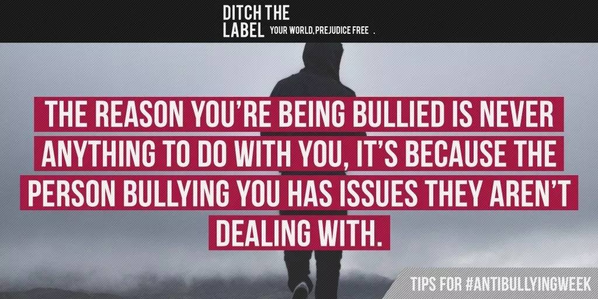
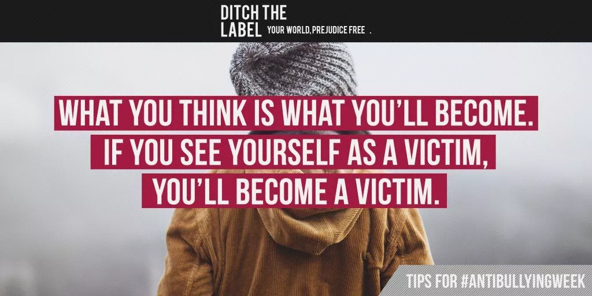
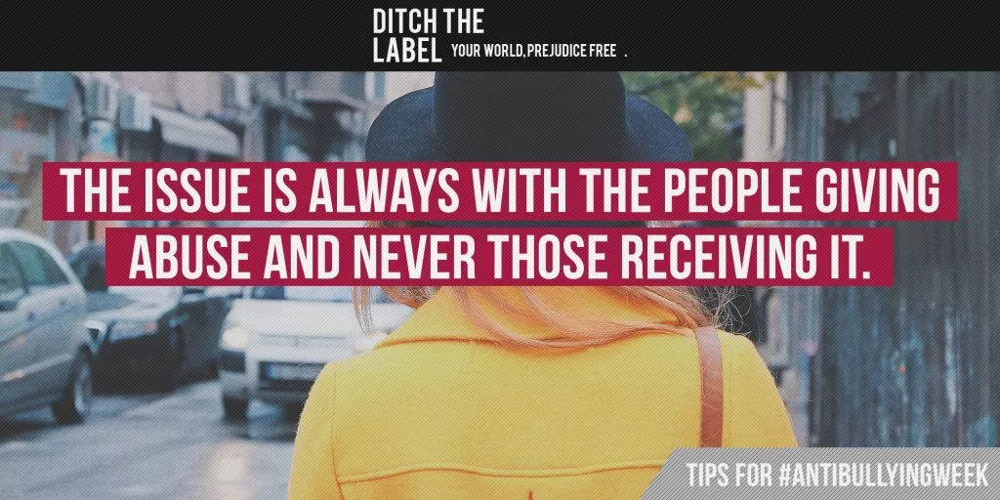

Bullying is a learnt behaviour. There are several reasons why people bully others; more often than not, bullying can be a coping mechanism for people who are going through a stressful or traumatic situation and it may also be learnt from abuse or prejudice-based attitudes at home.
Often people who bully others have at some point been bullied themselves or are currently being bullied.
Other reasons for bullying can include issues such as jealousy and insecurity – we know this because we work directly with people who bully so we can help them understand and overcome their negative behaviours. If you are being bullied, please know that you are NOT the problem.
If you are bullying somebody else, please speak up about it – get help on our Anonymous Community forum here.
Have you ever said something to a friend and upset them by accident? Chances are, it has probably happened loads of times. It’s a similar thing with bullying as the definition, by default is subjective – meaning that everybody has a different threshold of what they consider to be bullying. Sometimes, the person who is bullying you may genuinely have no idea that it is affecting you.
Equally, they are probably going through a difficult time themselves and will relate to how you’re feeling. This is why we have found that speaking to the person who is bullying you can be really effective. If this is something you’d consider, read this first.When you’re going through a stressful or difficult situation, it can clog your mind and fog your vision. This leads to people becoming distracted, stressed and unproductive. Bullying is something that affects so many people’s lives, but many people will never report it through embarrassment, fear or a lack of faith in support systems.
It is incredibly important that you go through the appropriate reporting channels by firstly telling a teacher/parent/guardian/learning mentor or another responsible adult. You can also contact us for advice and support. Even if you don’t want to report it, speak to somebody and don’t feel like you have to go through it alone because you don’t.
Bullying is a behaviour but some forms of bullying may also be a criminal offence. If somebody physically or sexually attacks you, steals from you or uses prejudice language or hate speech towards you (such as homophobia and racism) or shares your private information or intimate images online – these are all key signs that you should probably report it to the Police.
The reason people experience bullying is not because of their sexuality, gender identity, race, appearance, disability or any other unique factor; it is because of the attitude towards the factor. The only thing possible to change is attitudes. The person who is bullying you is the one with the issue, not you.
When you are going through a stressful situation, it can be difficult to deal with it objectively if you keep it all to yourself. The stress navigates towards the front of your mind and builds up into a completely avoidable chain of negative emotions. It is therefore incredibly important to tell somebody that you trust; it doesn’t even have to be an adult, it could be a friend or somebody at Ditch the Label. You deserve the help and support to get through this.
We have a really simple exercise available on our website called Stress Reprogramming which you can do either alone or with somebody else in around 30 minutes. The exercise will help you see stress differently and come up with a way forward.
Depriving yourself of any sort of support certainly isn’t going to resolve the issue or help you handle the bullying. We know it may feel like the best thing to do at the time, but it will only make things worse by silencing you and reducing your self-esteem. Often people who are bullied will understandably see themselves as victims, but it’s important that you look beyond that and don’t let the bullying dictate who you are. Talk about it to somebody at Ditch the Label.
We’re not going to go into the whole endorphin thing because you’ve probably heard it before – but seriously, eating a good, clean diet and exercising can really improve your physical and mental health and reduce stress. Reductions in stress increase your clarity, helping you break down difficult situations, making them much easier to deal with. Other things you can try include meditation, yoga, cooking, long walks, running and swimming.
We ALL have mental health, but why is it that everybody focuses more heavily on physical than mental? The fact of the matter is: we all have ups and downs and statistically, 1 in 4 of us will experience some sort of mental health complication such as depression or anxiety. It is completely okay to speak up about these issues and it is important that you seek emotional and mental health support from your GP, a therapist or counsellor. We have more advice on issues you may be facing available here.
When you’re going through your teen years, sometimes it can all seem like a bit of a black hole. It’s made even worse if you’re struggling with your identity or being bullied.
This is why it is important to seek out positive role models to show you that plenty of people have been where you are right now and have managed to overcome it. Read more stories and inspiring blogs here.
We are a leading global youth charity and we are here for you when you need us the most. If you need any help or guidance, join the community to chat anonymously with a digital mentor, or discuss what’s on your mind with others who’ve been there before!
